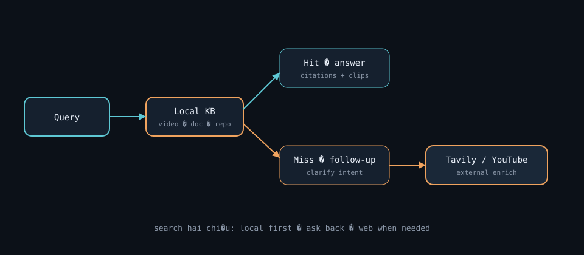
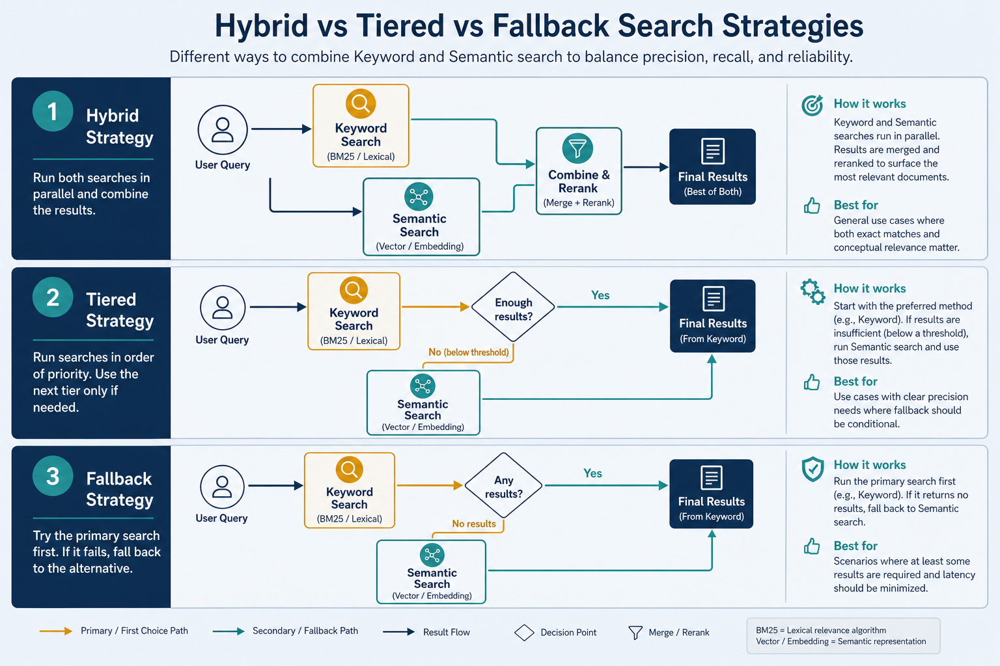
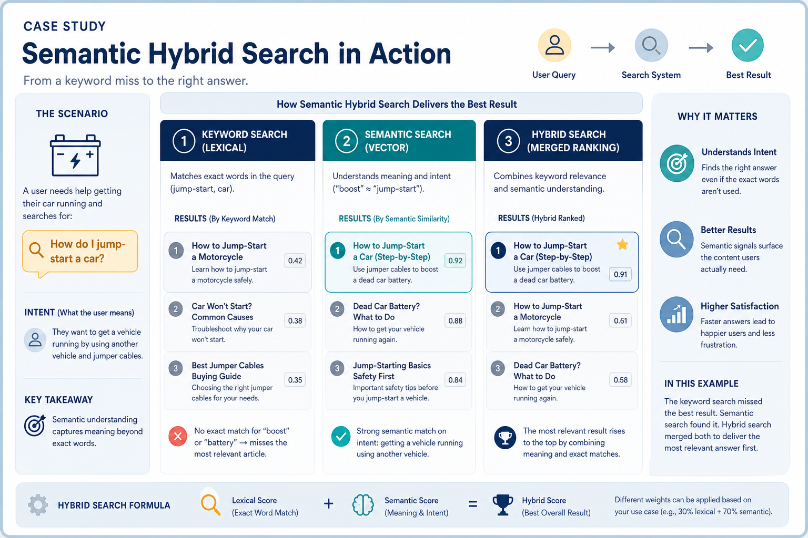

Semantic Search — Hybrid · Tiered · Fallback
Search by meaning: combine inverted index (Elastic) + semantic index (embeddings). My hands-on RAG learning project.
Semantic Search — Hybrid · Tiered · Fallback
Search by meaning, not just keywords, by combining two index types: inverted index (Elastic, by keyword) and semantic index (embedding, by meaning). This is the project I built to learn RAG deeply.
Repo: github.com/hoanganh25991/semantic-search — Hybrid / Tiered / Fallback on the MS MARCO dataset.
Why it matters
Keyword search (BM25 / TF-IDF in Elastic) is fast and cheap, but “car” and “automobile” are different strings — easy to miss matches. Embedding search captures meaning but is heavier to run on every query. Pragmatic semantic search combines both: use keywords to filter quickly, embeddings to rank by meaning. That is also a high-quality retrieve step for RAG.
Key ideas
- Two index types:
| Index | Mechanism | Strong | Weak |
|---|---|---|---|
| Inverted index (Elastic) | keyword → documents | fast, cheap, precise on exact terms / IDs | no synonym understanding |
| Semantic index (embedding) | vectors in vector database | captures meaning, varied phrasing | heavier embed + ANN cost |
- Three search strategies:
- Hybrid: inverted index filters (or retrieves) candidates by keyword, semantic index reranks by cosine/dot. Cost-efficient when keywords hit; fails when BM25 returns empty or irrelevant candidates — semantic never sees the right docs.
- Tiered: classify questions as easy/hard first → easy goes keyword-only, hard goes semantic (or hybrid). Balances p50 latency and precision (same idea as complexity router). Classifier errors are the main failure mode.
- Fallback: try semantic (or hybrid) first for max accuracy; if results look poor (low scores, empty, or low confidence), fall back to keyword. Most accurate when tuned; most expensive on the happy path if semantic always runs first.
- Latency shape (typical intuition):
- Keyword-only: ~5–30 ms (Elastic cache-warm).
- Hybrid: keyword + embed query + rerank top-N → often ~20–80 ms.
- Semantic-first / Fallback happy path: embed + ANN (+ optional BM25 merge) → often ~30–120 ms, plus model load cold starts.
- Tiered: p50 near keyword; p95 near semantic — if the easy/hard split is calibrated.
- Dataset and evaluation: MS MARCO — real user questions plus relevant passages. Metrics: Precision@k, MRR@10, Recall@k. A query classifier labels simple vs complex questions for Tiered. Always keep a private holdout — leaderboard overfitting is real.
- Storage: MongoDB for raw documents; Elasticsearch for indexed data (inverted + kNN) for fast search.
- Score fusion: when both lists return hits, RRF (reciprocal rank fusion) or weighted sum of normalized BM25 + cosine beats naive “semantic only” on exact entities (order IDs, error codes).
- Why this teaches RAG: retrieval quality dominates answer quality — the same lesson as rag.md, measured with ranking metrics instead of vibes.
Worked example (intuition)
Question: "How do I jump-start a car?"
- Keyword alone: may miss docs that only say
"boost a vehicle battery"(no shared tokens with “jump-start”). MRR suffers on paraphrase-heavy queries. - Semantic alone: retrieves automotive battery posts, but may also surface “jump” as in jump training or metaphorical “jump-start your career” if the corpus is messy — high recall, noisier precision.
- Hybrid: BM25 keeps candidates with
battery/car/vehicle; cosine ranks the true jump-start guide above generic car maintenance. End-to-end: keyword candidate set size ~50–200, embed once, rerank → top-10 for the UI or RAG. - Tiered path: classifier marks this as hard (how-to, paraphrase risk) → semantic or hybrid path. A different query
"error code E42"might be easy → keyword-only, sub-20 ms. - Fallback path: semantic returns top score 0.22 (below threshold) → fall back to BM25 so the user still sees exact-token matches instead of an empty page.
Common pitfalls
- Hybrid with empty keyword hits — need a fallback path when BM25 returns nothing (rare tokens, typos, pure paraphrase).
- Tiered with a bad easy/hard classifier — hard queries wrongly sent to keyword → systematic paraphrase failures; easy queries sent to semantic → wasted latency/cost.
- Optimizing only public leaderboards — overfit MS MARCO quirks; validate on your own corpus and languages.
- Ignoring latency budgets — semantic-on-everything can blow SLAs; watch p95/p99, not only mean.
- Uncalibrated “poor result” thresholds in Fallback — thrashing between paths or never falling back.
- Double-counting in fusion — merging lists without deduping doc IDs inflates scores for duplicates.
Illustrations




Deeper dive
- Hybrid failure case: query
"automobile won't crank in winter"with a corpus that only says"car engine fails to start in cold". If the keyword filter requires"automobile", the candidate set is empty and reranking cannot recover — fix with synonym expansion, a looser first stage, or Fallback-to-semantic-without-filter. - Tiered economics: if 70% of traffic is “easy” and keyword is 5× cheaper than semantic, Tiered can cut embed/ANN cost ~70% while holding MRR if the classifier’s false-negative rate on hard queries stays low (measure that rate explicitly).
- Fallback latency: worst case ≈ semantic_time + keyword_time (serial). Parallelize only if you always need both; otherwise you pay semantic on every request and sometimes BM25 — set a score threshold so Fallback is rare.
- MS MARCO metric gotcha: MRR@10 rewards getting a relevant hit near rank 1; a system can look strong on MRR while Recall@50 is mediocre — bad for RAG that needs several supporting chunks.
- Elastic kNN + BM25:
boolquery withshouldclauses or RRF plugin; ensure the same_idspace so fusion isn’t comparing apples to oranges across indexes. - Cold-start / failure modes: embedding model not loaded (multi-second first query), ANN index relocating shards, Mongo fetch slower than search — users blame “search quality” when the real bug is timeout → empty UI.
- Eval loop: fix a 200–500 query gold set from your logs; track Precision@5, MRR@10, p95 latency, and % path taken (keyword / hybrid / semantic / fallback) per release.
- RRF intuition. Reciprocal rank fusion scores
Σ 1/(k + rank)across lists (oftenk=60). It needs no score calibration between BM25 and cosine — usually stabler than hand-tuned weighted sums when engines use different numeric scales. - Online shadow traffic. Before switching default strategy, run the new path in shadow (log rankings, don’t show users) for a day of queries; compare overlap@10 and p95 against the champion. Strategy flips without shadow data create silent regressions.
Decision guide
| Situation | Prefer | Avoid / why |
|---|---|---|
| Tight latency SLA, many exact-ID queries | Tiered (easy → BM25) or keyword-first Hybrid | Semantic-first Fallback on 100% traffic |
| Paraphrase-heavy how-to / natural language | Hybrid or semantic-first Fallback | Keyword-only — synonym blind spots |
| BM25 often returns 0 hits (typos, other language) | Semantic-first or Hybrid with loose/no keyword gate | Strict keyword filter before ANN |
| Need best offline quality, cost secondary | Fallback or Hybrid + cross-encoder rerank | Tiered with an untested classifier |
| Cost-sensitive high QPS | Tiered with measured easy/hard mix | Embedding every query at peak QPS |
| RAG needs diverse supporting passages | Optimize Recall@k + deduped fusion | MRR-only tuning that returns one near-duplicate |

Case study
MS MARCO-style how-to query: "How do I jump-start a car?" on a corpus that often says "boost a vehicle battery".
- Inputs: dual indexes (Elastic BM25 + embedding kNN), optional easy/hard classifier, gold judgments for MRR@10 / Recall@50.
- Steps: Hybrid — BM25 retrieves ~100 candidates with
car|battery|vehicle→ embed query once → cosine rerank → top-10. Tiered — classifier marks how-to as hard → semantic/hybrid path;"error code E42"stays keyword-only (~<20 ms). Fallback — if top semantic score < 0.25, return BM25 so the UI is never empty. - Output: paraphrase queries gain MRR; exact error codes stay cheap; dashboards show % traffic per path and p95 latency.
- What you'd check: empty BM25 candidate sets; classifier false negatives on hard paraphrases; Fallback threshold thrash; RRF dedupe by doc id; private holdout not only public MS MARCO leaderboard.
Lab checklist
- [ ] Run the same query through keyword-only and embedding-only; compare top-5
- [ ] Implement a simple hybrid (filter/retrieve then rerank) on a toy corpus
- [ ] Compute MRR@10 or Precision@5 on ≥20 labeled queries
- [ ] Add a Fallback rule when top score or hit count is too low
- [ ] Log which path ran (keyword / hybrid / semantic / fallback) for each query
- [ ] Measure p50 and p95 latency with and without embedding
- [ ] Fuse two ranked lists with RRF (or weighted sum) and dedupe ids
- [ ] Write one paragraph on when Tiered would beat Hybrid for your traffic mix
Pipeline
question → (classify easy/hard) → { keyword: inverted index | meaning: semantic index }
→ merge / rerank → top-k → RAG
Semantic search stands on embedding.md + vector-database.md, and is the retrieval step for rag.md.
Slides & demo
| Link | |
|---|---|
| Slides | slides/semantic-search |
| GitHub | hoanganh25991/semantic-search |
References
Related
- vector-database.md, rag.md, embedding.md
- 05-demo-text.md — complexity router (same tiered idea)